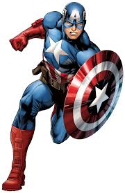
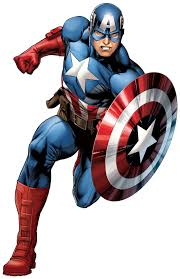

Biographie du personnage
Origines
À l’origine, la Vision est une création du robot Ultron-5 destinée à devenir une arme contre les Vengeurs. Ultron utilisa le corps de la première Torche Humaine (Jim Hammond) et des séquences mnésiques de Wonder Man (Simon Williams) que tous pensaient décédé.
La Vision, plus qu’un simple robot, réussit à se libérer du contrôle d’Ultron et aide les Vengeurs. Il fait depuis partie de l’équipe.
Pouvoirs, capacités
La Vision est un « synthézoide », c’est-à-dire un être robotique de synthèse. Il n’a pas besoin de manger, ni de respirer.
Son pouvoir principal est de manipuler sa propre densité, son poids évoluant en fonction de son degré de densité. En la diminuant, il peut devenir intangible et traverser la matière physique solide, comme les murs. Grâce à cela, il peut léviter et voler à vitesse réduite. Il se sert aussi de cette capacité au combat, pour troubler le système nerveux de ses adversaires, ce qui a pour effet de les rendre inconscients, voire de les tuer. En augmentant sa densité, il devient très lourd et presque insensible aux chocs, son corps devenant plus dur que du diamant.
- La Vision possède une force et une endurance surhumaine.
- En tant que robot intelligent, il peut se connecter à tout ordinateur. Son intelligence artificielle lui permet d’enregistrer toute information. Il est équipé de différents capteurs.
- ses réflexes sont extraordinaires et presque de nature surhumaine, son temps de réaction étant 10 fois inférieurn à celui d'un être humain normal. Grâce à cela, il est capable d'éviter les tirs de projectiles simultanés, même à bout portant ;
- Il possède une gemme solaire incrustée sur le front, capable d’absorber l'énergie solaire et d’émettre des rayons thermiques. C’est cette gemme qui stocke l’énergie solaire et lui permet de s’auto-alimenter en énergie, voire de se réparer seul.
- Il est également capable de prendre l'apparence d'un humain afin de dissimuler sa nature robotique. Cependant, il revient à son état robotique si il subit une grave blessure en forme humaine.